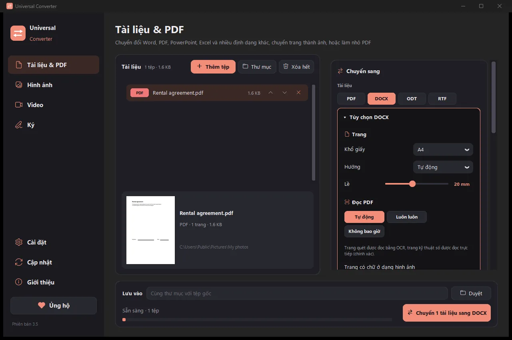
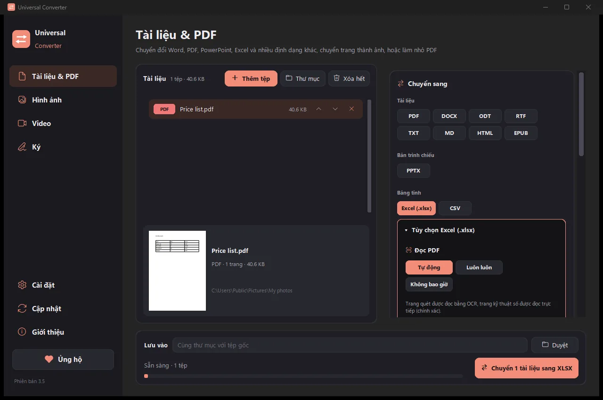
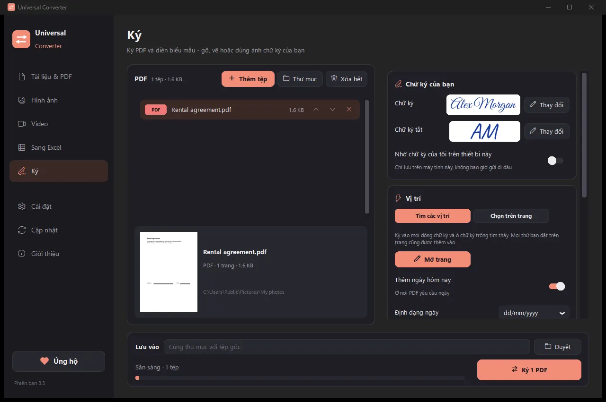

Chuyển đổi tệp ngay trên thiết bị của bạn
Hình ảnh, tài liệu, video và âm thanh, PDF và bảng sang Excel, tất cả trong một ứng dụng. Không có gì bị tải lên: tệp của bạn không bao giờ rời khỏi thiết bị.
Cách cài đặt và cập nhật
- Mở tệp .dmg đã tải và kéo Universal Converter vào Applications.
- Mở ứng dụng. Lần đầu, macOS chặn ứng dụng vì nó không được Apple ký: nhấp Xong.
- Mở Cài đặt hệ thống > Quyền riêng tư & Bảo mật, cuộn xuống, nhấp Vẫn mở và nhập mật khẩu. Bạn chỉ cần làm việc này một lần.
Cập nhật: nếu bạn cho phép khi mở ứng dụng lần đầu, ứng dụng sẽ kiểm tra phiên bản mới mỗi lần khởi động, xác minh chữ ký số và cài đặt khi bạn chọn.
Cách cài đặt và cập nhật
- Chạm Tải về cho Android trên điện thoại.
- Mở tệp đã tải. Nếu Android hỏi, hãy cho phép trình duyệt hoặc trình quản lý tệp cài đặt ứng dụng.
- Chạm Cài đặt.
Cập nhật: ứng dụng kiểm tra khoảng mỗi ngày một lần và báo cho bạn khi có phiên bản mới. Tải về theo cách tương tự và cài đè lên bản cũ; cài đặt của bạn vẫn được giữ.

Riêng tư
Mọi thứ chạy trên thiết bị của bạn. Không tải lên, không phải xếp hàng chờ, không giới hạn dung lượng.
Miễn phí
Dùng miễn phí, không quảng cáo, không cần tài khoản và không có hình mờ.
22 ngôn ngữ
Tiếng Anh, Hy Lạp, Tây Ban Nha, Ý, Đức, Pháp, Bồ Đào Nha, Ba Lan, Nga, Ả Rập, Do Thái, Trung, Nhật, Hàn, Tamil, Afrikaans, Yoruba, Hausa, Hindi, Indonesia, Thổ Nhĩ Kỳ và tiếng Việt.
Năm công cụ trong một cửa sổ

Tài liệu & PDF
Chuyển đổi qua lại giữa PDF, Word, ODT, RTF, TXT, Markdown, HTML, EPUB, PowerPoint và Excel. Chuyển trang thành ảnh và gộp nhiều tệp thành một PDF. Phông chữ, cỡ chữ và màu sắc được giữ nguyên. Làm nhỏ PDF đến dung lượng bạn chọn. Bản quét và biểu mẫu đã điền thành chữ và bảng chỉnh sửa được, bố cục giống trang gốc.
Hình ảnh
Chuyển đổi giữa JPG, PNG, WEBP, TIFF, BMP, GIF và ICO. Đổi kích thước theo điểm ảnh, phần trăm hoặc dung lượng tệp, gộp ảnh thành tệp PDF hoặc Word, và đọc chữ trong ảnh (OCR). Cũng có thể thêm PDF: mỗi trang thành một ảnh.

Video
Chuyển đổi video giữa MP4, MKV, WebM, MOV và AVI, và nén bằng AV1, H.265, H.264 hoặc VP9. Cắt đoạn, cắt khung, xoay và đổi kích thước, tạo GIF, lưu khung hình thành ảnh, hoặc chỉ giữ âm thanh dưới dạng MP3, M4A, FLAC, WAV, OGG hoặc Opus. Trên Android: MP4, MKV, WebM, MOV hoặc GIF, hoặc âm thanh dạng M4A, OGG hoặc WAV; cắt đoạn, cắt khung, xoay, đổi kích thước và lưu khung hình.

Excel
Lấy bảng từ PDF, bản quét và ảnh chụp sang Excel hoặc CSV: sao kê ngân hàng, hóa đơn, bảng giá. Đọc được tiếng Anh, tiếng Hy Lạp, tiếng Tây Ban Nha và hơn 30 ngôn ngữ khác.

Ký
Ký PDF và điền biểu mẫu. Gõ tên của bạn theo kiểu chữ viết tay, vẽ chữ ký hoặc dùng ảnh chụp chữ ký. Ứng dụng tự tìm dòng chữ ký, hoặc bạn nhấp hay chạm vào nơi cần đặt chữ ký, chữ ký tắt, ngày, chữ hoặc dấu tích. Ký nhiều tệp cùng lúc; tệp gốc vẫn được giữ nguyên.
- Dùng card đồ họa cho video khi có thể: thường nhanh hơn 5 đến 20 lần.
- Kéo vào cả thư mục: mọi tệp được chuyển đổi trong một lần.
- Cho bạn biết khi một tệp thuộc về thẻ khác, và chuyển nó sang đó chỉ với một cú nhấp.
- Báo cho bạn khi có phiên bản mới; trên Windows và Mac ứng dụng có thể tự cài cho bạn, sau khi xác minh chữ ký số.
- Giao diện sáng và tối, theo thiết bị của bạn.
Cách hoạt động
- Mở Universal Converter và chọn Tài liệu & PDF · Hình ảnh · Video · Ký ở bên trái.
- Kéo tệp hoặc cả thư mục vào cửa sổ, hoặc nhấp Thêm tệp.
- Nhấp Chuyển đổi. Tệp mới được lưu cạnh tệp gốc, hoặc vào thư mục bạn chọn.
Ứng dụng làm được gì
- Chuyển PDF sang Word
- Chuyển tài liệu Word sang PDF
- Gộp nhiều tệp thành một PDF
- Nén PDF đến dung lượng bạn chọn
- Chuyển trang PDF thành ảnh JPG
- Biến tài liệu quét thành tệp Word chỉnh sửa được
- Chuyển đổi ảnh giữa JPG, PNG, WEBP và nhiều định dạng khác
- Đổi kích thước ảnh hoặc giảm xuống một dung lượng nhất định
- Gộp ảnh thành một PDF
- Sao chép chữ từ ảnh (OCR)
- Nén video mà không cần tải lên
- Chuyển đổi video giữa MP4, MKV, WebM, MOV và AVI
- Lưu âm thanh của video thành MP3
- Tạo GIF từ video
- Lấy bảng từ PDF sang Excel
- Chuyển sao kê ngân hàng PDF sang Excel
- Trích bảng từ hóa đơn PDF sang Excel
- Ký PDF
- Điền biểu mẫu PDF
Câu hỏi
Có thật sự miễn phí không?
Có. Universal Converter dùng miễn phí, không quảng cáo, không cần tài khoản và không giới hạn thời gian. Nếu thấy hữu ích, bạn có thể ủng hộ việc phát triển bằng một khoản đóng góp tự nguyện, nhưng không bao giờ bắt buộc.
Tệp của tôi có bị tải lên đâu không?
Không. Mọi lượt chuyển đổi đều diễn ra trên thiết bị của bạn, nên ứng dụng vẫn hoạt động khi không có kết nối internet. Ứng dụng chỉ kết nối mạng để kiểm tra cập nhật, tải các bảng chữ cái nhận dạng chữ bạn chọn và, nếu bạn cho phép, gửi báo cáo lỗi ẩn danh.
Windows hiện cảnh báo SmartScreen. Có bình thường không?
Có. Trình cài đặt chưa được ký mã, nên Windows chưa nhận ra nó. Chọn “Thông tin khác”, rồi “Vẫn chạy”. Các bản cập nhật sau đó được chính ứng dụng xác minh chữ ký số. Hoặc cài từ Microsoft Store, nơi không hiện cảnh báo.
Làm sao để mở trên Mac?
Mở tệp đã tải và kéo Universal Converter vào Applications. Ứng dụng không được Apple ký, nên lần đầu mở macOS sẽ chặn: nhấp Xong, rồi mở Cài đặt hệ thống > Quyền riêng tư & Bảo mật, nhấp “Vẫn mở” và nhập mật khẩu. Bạn chỉ cần làm việc này một lần.
Làm sao để cài trên Android?
Tải tệp APK trên điện thoại, mở tệp và cho phép cài đặt khi được hỏi (Android 10 trở lên). Cả 22 ngôn ngữ đều có sẵn; hãy chọn một ngôn ngữ trong Cài đặt của ứng dụng. Ứng dụng sẽ báo khi có phiên bản mới.
Ứng dụng có những ngôn ngữ nào?
Ứng dụng có tiếng Anh, Hy Lạp, Tây Ban Nha, Ý, Đức, Pháp, Bồ Đào Nha, Ba Lan, Nga, Ả Rập, Do Thái, Trung, Nhật, Hàn, Tamil, Afrikaans, Yoruba, Hausa, Hindi, Indonesia, Thổ Nhĩ Kỳ và tiếng Việt. Bạn chọn trong trình cài đặt, hoặc sau đó trong Cài đặt.